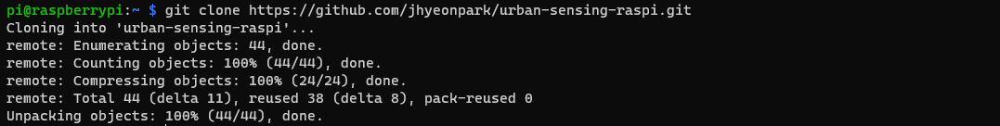
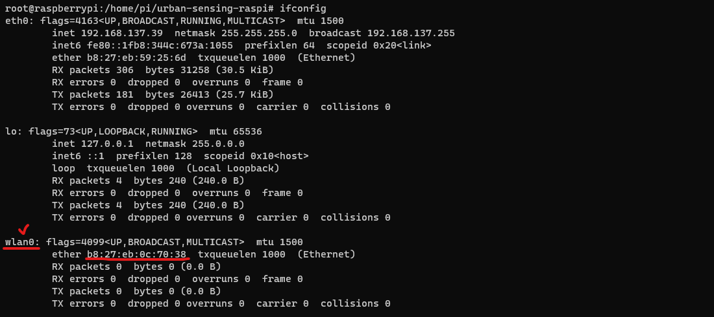

4 Sensing Setup
This guide walks you through the setup of your Raspberry Pi for urban sensing. Learn how to fetch essential scripts, install required packages, and configure settings for optimal sensing performance. Ensure your device is uniquely identified and ready for data collection.
4.1 Getting the Scripts
Begin by fetching the scripts from the urban-sensing-raspi GitHub repository.
Ensure you’re in the /home/pi directory. If not, navigate there using:
cd /home/piClone the repository with:
git clone https://github.com/jhyeonpark/urban-sensing-raspi.git
Repository Overview
The repository structure is as follows:
.
├── service.sh
├── name.sh
├── envr.sh
├── packages.sh
├── code
│ └── start.py
└── README.mdpackages.sh: Handles updates, installations, and other setup tasks.name.sh: Allows users to set or confirm the unique sensor name.envr.sh: Configures udev rules and prepares the Pi’s environment.service.sh: Sets up the urban sensing service to launch on boot.start.py: The main script for the Urban Sensing Service, located in ‘code/default’.
4.2 Installing Required Packages
Elevate privileges to a superuser session:
sudo suNavigate to the repository:
cd /home/pi/urban-sensing-raspiExecute the packages.sh script:
bash packages.sh4.3 Setting the Sensor Name
For organized data collection across multiple devices, it’s essential to assign a unique identifier to each sensor. This segment aids you in naming your Raspberry Pi sensor and integrating it into a Python script.
Navigate to the repository:
cd /home/pi/urban-sensing-raspiRun the name.sh script. If no name is provided, the default (raspberrypi) will be applied:
bash name.shPost this, the sensor name can be retrieved from the sensor_name.conf file for usage.
4.4 Configuring Settings
Configure the Raspberry Pi to set its internal WiFi to wlan0. When you connect an external adapter, it will be assigned differently. To determine the MAC address of the internal WiFi, execute the following command:
ifconfigIn my setup, the WiFi with the MAC address b8:27:eb:0c:70:38 was assigned to wlan0, while the external adapter received a different assignment.

Navigate to the repository:
cd /home/pi/urban-sensing-raspiRun the envr.sh script:
bash envr.shThis script ensures consistent network interface naming with udev rules at boot.